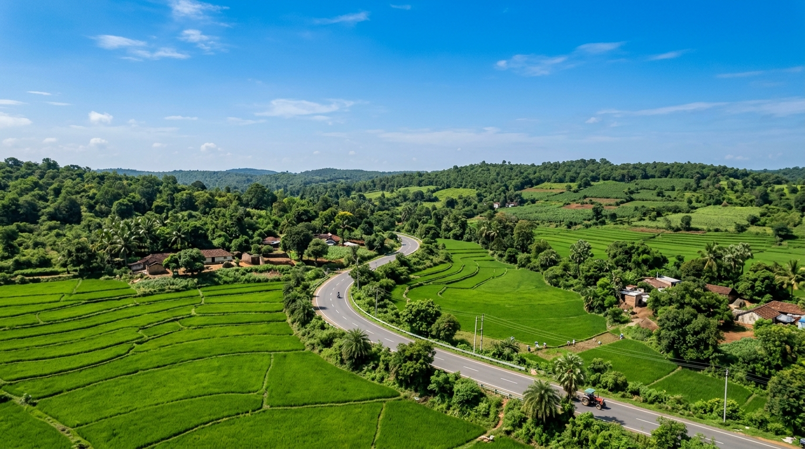

Visual Documentation
Photographic Archive
Documented public appearances, legislative activities, constituency infrastructure, and cultural landmarks across Jayashankar Bhupalpally.

Portraits
Official Legislative Profile Portrait

Public Events
Constituency Public Assembly Address

Portraits
Constituent Greeting Portrait

Constituency & Governance
Executive Coordination with State Leadership
Infrastructure & Heritage
Ghanapur Reservoir & Modernized Canals
Infrastructure & Heritage
Kotanchu Sri Lakshmi Narasimha Swamy Temple

Portraits
Public Representative Portrait
Infrastructure & Heritage
Indiramma Rural Housing Units

Constituency & Governance
Jayashankar Bhupalpally Rural Topography
Archival & Usage Notice: Photographic assets depict official public representation, assembly proceedings, state leadership consultations, and regional infrastructure projects across Bhupalpalle constituency. Photographs originate from verified news coverage (Sakshi, Andhra Prabha, V6 Velugu, The Hans India), Election Commission documentation, and official legislative directory listings.